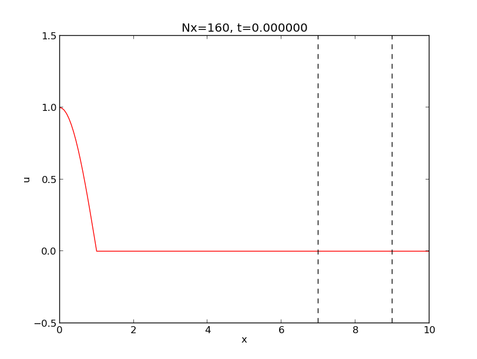

Under construction!
Summary. This note explains how to create animations from a series of individual plots.
The animations are realized in several formats relevant for today's
web browsers and PDF viewers: animated GIF, MP4, WebM, Ogg, and Flash.
The tools used to create video files are convert, ffmpeg, avconv,
and mencoder.
Suppose we have a set of image files containing a curve that moves. Two such images are displayed in Figure ref{animate:fig:frames}. In our particular example, the animation shows the evolution of a function \( f(x,t) \) in time \( t \), where the the individual plots correspond to different values of \( t \).
Our aim is to combine the individual image files to a movie file that can be shown in a web page, a PDF document, or simply just played by a video player on a computer.
Filenames.
In the forthcoming examples, the individual plot files are stored in a
subdirectory frames and have filenames frame_0000.png,
frame_0001.png, frame_0002.png, and so on. The plot files were
generated in some program that used the printf syntax frame_%04d.png
to specify the filenames. Note that the padding with zeros is
important if we want a Unix wildcard notation frame_*.png to list
the files in correct order (without padding, frame_21.png appears
before frame_2.png in a standard alphanumeric sorting).
We assume in the following that all our frames are stored as files
frame_*.png in a subdirectory frames.
Terminal> ls -1 frames
frame_0000.png
frame_0001.png
frame_0002.png
frame_0003.png
frame_0004.png
frame_0005.png
frame_0006.png
frame_0007.png
frame_0008.png
frame_0009.png
frame_0010.png
frame_0011.png
...
frame_0313.png
frame_0314.png
frame_0315.png
frame_0316.png
frame_0317.png
frame_0318.png
frame_0319.png
frame_0320.png
Video formats.
The relevant video formats are dictated by the media we want to use to
display the video. In web pages, modern HTML5 has support for video,
but it is recommended to have the video available in three formats to
cover the most common browsers and devices: MP4, WebM, and Ogg.
HTML pages can also show animated GIF files. Flash files can
be uploaded to YouTube or Vimeo and embedded in any HTML file. In PDF documents
produced from LaTeX, the media9 package is the current standard. It
supports embedded movies in MP4 or Flash format to be displayed by
Acrobat Reader version 9 and later.
The following text provides a lot of Unix commands for creating movies as batch processes. All commands are collected in the shell script session.sh.
Animated GIF files can be made by the convert program from the
ImageMagick suite.
Making an animation with 12 frames per second in the file
demo_convert.gif is done by
Terminal> convert -delay 8 frames/frame_*.png demo_convert.gif
The -delay option specifies the number of 0.01 seconds between each
frame, so if we want 12 frames per second, the delay becomes \( 100/12
\approx 8 \). One can add the option -loop 0 to make the animation
repeat forever.
The animated GIF file is displayed through an ordinary image tag in HTML:
<img src="demo_convert.gif" width=500>
Alternatively, one can run animate demo_convert.gif to watch the
movie on the screen.
Figure 1: Animated GIF file.

With a lot of frames, especially when each frame has a significant size,
convert needs substantial computational resources to make the animated
GIF file, and the filesize easily becomes huge (essentially the sum
of the GIF versions of the PNG files in this example). The
corresponding loading time in HTML or in the animate application
is significant. Hence, animated GIF files are best suited for smaller
file collections.
[hpl 1: `convert` is killed when trying to make the demo animation; it is too big for my Mac 11''.]
ffmpeg to make MP4, WebM, Ogg, and Flash files
The basic ffmpeg command for producing a movie file with
name movie.ext, in the format
implied by the extension .ext, reads
Terminal> ffmpeg -r 12 -i frames/frame_%04d.png movie.ext
The -r option specifies the number of frames per second, and -i
lists the individual frames, with the filenames parameterized
according to the printf syntax. The relevant extensions are
.mp4 for MP4, .webm for WebM, and .ogg for Ogg.
Video files are compressed and therefore need a codec to compress and decompress
the contents. One should specify the codec explicitly to make sure
the same codec is used for making the movie and for playing it.
For the MP4 format it is common now to use the H.264 standard,
which is implemented in the open source library x264. The
Ogg format should be made with the libtheora (for video)
and libvorbis (for audio) codecs. The Google-sponsored WebM
format applies the libvpx codec (for video) and
the libvorbis codec (for audio).
Creating MP4 video.
The ffmpeg command for MP4 movies with the H.264 codec is
Terminal> ffmpeg -r 12 -i frames/frame_%04d.png \
-vcodec libx264 -x264opts movie1.mp4
The option for the audio codec (-acodec) can be skipped when there is
not sound. The -x64opts does not work on all platforms.
[hpl 2: Be specific!
It appears here and there, but does not work on Ubuntu.]
The resulting file can be shown in a video player, such as vlc, mplayer, gxine, or totem on Linux platforms:
Terminal> vlc movie1.mp4
Terminal> mplayer movie1.mp4
Terminal> gxine movie1.mp4
Terminal> totem movie1.mp4
[hpl 3: Some doc (the doc of the media9 package to be specific) claims
that keyint=12 is important (one key frame per second for effective
video searching), but ffmpeg on Ubuntu does not recognize this option.
Is it available on Mac?]
[hpl 4: On my Ubuntu, ffmpeg does not recognize the -x264opts option.
It did not recognize libx64 but suddenly it does.]
Creating WebM video.
The relevant ffmpeg command video in the WebM format is
Terminal> ffmpeg -r 12 -i frames/frame_%04d.png \
-acodec libvorbis -vcodec libvpx movie1.webm
Creating Ogg video.
The proper ffmpeg command for Ogg video is
Terminal> ffmpeg -r 12 -i frames/frame_%04d.png \
-acodec libvorbis -vcodec libtheora movie1.ogg
Creating Flash video.
The Flash format is produced by the ffmpeg command
Terminal> ffmpeg -r 12 -i frames/frame_%04d.png \
-vcodec flv movie1.flv
The command ffmpeg -codecs lists all available codecs.
[hpl 5: All installed
or all available in theory?]
avconv to make MP4, WebM, Ogg, and Flash files
Exactly the same commands as for ffmpeg.
mencoder to make MP4, WebM, and Ogg files Below are some collected sketches of how to work with mencoder...
cmd = "mencoder mf://tmp/* -mf type=%(TYPE)s:fps=%(FPS)f -o "%(OUT)s" -ovc lavc "
cmd % { 'FPS': (1.0/options.spf),
'OUT': options.out,
'TYPE': imagetype }
mencoder -vf -ovc x264 -x264encopts -lavfopts format=mp4 -o movie.mp4
Terminal> mencoder 'mf://*.jpg' -mf fps=25 -o output.avi \
-ovc lavc -lacvopts vcodec=msmpeg4v2
Terminal> mencoder 'mf://animation/*.png' -mf fps=25:type=png \
-ovc lavc -lavcopts vcodec=mpeg4:mbd=2:trell -oac copy -o huygen.avi
Terminal> mencoder 'mf://*.png' -mf type=png:fps=10 -ovc \
lavc -lavcopts vcodec=wmv2 -oac copy -o animation.avi
Terminal> mencoder mf://*.png -mf type=png:w=800:h=600:fps=25 \
-ovc lavc -lavcopts vcodec=mpeg4 -oac copy -o output.avi # older
The easiest way of playing a movie is to have it available on YouTube since any browser is capable of playing a YouTube video. Video files can be uploaded manually...
The youtube-upload script by Arnau Sanchez automates uploading a video to YouTube.
Terminal> youtube-upload --email=myemail@gmail.com \
--password=mypassword \
--title="Wave Motion in Discontinuous Media" \
--description="Finite difference method" \
--category=Science \
--keywords="finite differences, waves" \
movie1.flv
How can we know the address of this movie?
[hpl 6: Possible, but no user-friendly script found.]
A web page can play a series of image files as an animation with the aid of some JavaScript code. A typical example on such code goes as
<script language="Javascript">
var num_images_movie = 321;
var img_width = 800;
var img_height = 600;
var interval = 300;
var images_movie = new Array();
function preload_images_movie()
{
t = document.getElementById("progress");
t.innerHTML = "Preloading image ";
images_movie[0] = new Image(img_width, img_height);
images_movie[0].src = "frames/frame_0000.png";
t.innerHTML = "Preloading image ";
images_movie[1] = new Image(img_width, img_height);
images_movie[1].src = "frames/frame_0001.png";
...
t.innerHTML = "Preloading image ";
images_movie[320] = new Image(img_width, img_height);
images_movie[320].src = "frames/frame_0320.png";
t.innerHTML = "";
}
function tick_movie()
{
if (frame_movie > num_images_movie - 1)
frame_movie = 0;
document.movie.src = images_movie[frame_movie].src;
frame_movie += 1;
tt = setTimeout("tick_movie()", interval);
}
Some buttons for controls can easily be added:
<form>
<input type="button" value="Start movie" onClick="startup_movie()">
<input type="button" value="Pause movie" onClick="stopit()">
<input type="button" value="Restart movie" onClick="restart_movie()">
<input type="button" value="Slower" onClick="slower()">
<input type="button" value="Faster" onClick="faster()">
</form>
<p><div ID="progress"></div></p>
<img src="frames/frame_0000.png" name="movie" border=2/>
where the JavaScript functions called by the buttons are defined as
function startup_movie()
{
preload_images_movie();
frame_movie = 0;
setTimeout("tick_movie()", interval);
}
function stopit()
{ clearTimeout(tt); }
function restart_movie()
{ tt = setTimeout("tick_movie()", interval); }
function slower()
{ interval = interval/0.7; }
function faster()
{ interval = interval*0.7; }
</script>
The program html_player.py generates this type of JavaScript code and is run like
Terminal> python html_player.py frames/frame_*.png > player.html
You can now load player.html into a browser to see the movie, or
click here.
video tag
To display a specific video file, say movie1.webm, the relevant
HTML5 command is
<video autoplay loop controls
width='640' height='365' preload='none'>
<source src='movie1.webm' type='video/webm; codecs="vp8, vorbis"'>
</video>
The autoplay command makes the video play when the page is loaded.
You may not want this feature. The loop command causes the video to
repeat forever, while controls inserts some basic controls for
playing, pausing, full screen viewing, etc.
The fundamental problem with the video tag in HTML5 is that
it does not work with any format in any browser on any type of device.
A common recommendation is to make the videos in three formats,
MP4, WebM, and Ogg, and specify all three as possible formats:
<div>
<video autoplay loop controls
width='640' height='365' preload='none'>
<source src='movie1.mp4' type='video/mp4;
codecs="avc1.42E01E, mp4a.40.2"'>
<source src='movie1.webm' type='video/webm;
codecs="vp8, vorbis"'>
<source src='movie1.ogg' type='video/ogg;
codecs="theora, vorbis"'>
</video>
</div>
The MP4 file is specified first, because on iOS devices (iPhone/iPad) only one source is loaded, but these devices play MP4 files.
embed tag
Prior to HTML5 one used the embed tag to embed movies. The browser
then relies on some player on the system. Successful playing of a video
relies on
correct configuration of the browser with an appropriate movie player.
The embed tag looks like
<embed src="movie1.mpeg" width='640' height='365'
autoplay="true" loop="true"></embed>
media9
Terminal> sudo apt-get install -y libavcodec-extra-53 libx264-dev \
x264 h264enc ffmpeg libav-tools
Terminal> sudo apt-get install -y mplayer gnome-mplayer mencoder \
totem totem-plugins totem-mozilla vlc browser-plugin-vlc \
gxine python-pyxine xine-plugin libxine2-dev \
libxine2-all-plugins gxine-plugin libxine2-ffmpeg
Terminal> sudo apt-get install -y swfdec-gnome flashplugin-installer
Useful links for installing ffmpeg: